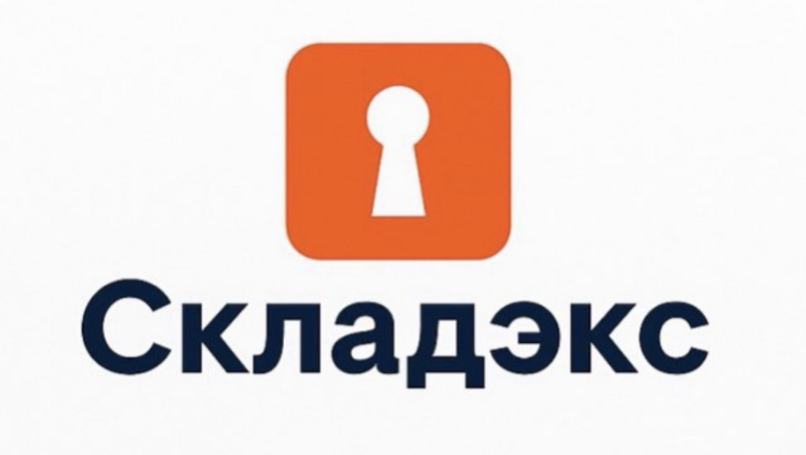

КОМПАКТНЫЙ ФОРМАТ
1,9–2,99 м²ФИРМЕННЫЙ СТИЛЬ / ЦИФРОВАЯ ВЕРСИЯ
Свой характер.
Свободное пространство.
Глубокий синий — основа. Оранжевый — действие и узнаваемый знак. Светлый фон, чёткая типографика и округлые формы поддерживают характер вашего логотипа.
Шрифт сайта — Manrope: геометричный, хорошо читаемый, с полноценной кириллицей. Для заголовков — 700–800, для текста — 400–500.

01 / ПАЛИТРА
Два акцента. Много воздуха.
#071E3A
#F85809
#F4F7FA
#FFFFFF
Дополнительные цвета: сине-серый #536B82 для пояснений и светло-голубой #E9F0F7 для подложек. Цвета подобраны по логотипу с учётом его цветового профиля Display P3 и переведены в sRGB для сайта.
02 / ТИПОГРАФИКА
Manrope. Одна гарнитура — ясная иерархия.
800 / НАЗВАНИЕ БРЕНДА
Складэкс
700–750 / ЗАГОЛОВКИ
Вещам — своё место.
Вам — больше пространства.
400–500 / ОСНОВНОЙ ТЕКСТ
Индивидуальные кладовые рядом с домом. Уберите из квартиры то, что важно сохранить, но не нужно каждый день.
650–750 / КНОПКИ И КОРОТКИЕ ПОДПИСИ
Выбрать площадь ↗
АБВГДЕЁЖЗИЙКЛМНОПРСТУФХЦЧШЩЪЫЬЭЮЯ
абвгдеёжзийклмнопрстуфхцчшщъыьэюя
0123456789 · 2–4 м² · Республики, 205
абвгдеёжзийклмнопрстуфхцчшщъыьэюя
0123456789 · 2–4 м² · Республики, 205
03 / ПРИМЕНЕНИЕ
Уверенная форма. Понятное действие.
Крупный заголовок, светлая карточка и одна оранжевая кнопка помогают сразу увидеть главное. Скругления повторяют форму знака со скважиной.
На оранжевых кнопках используется тёмно-синий текст. Белый текст остаётся на синих кнопках — так небольшие подписи читаются лучше.
04 / ПРАВИЛА
Система, которую легко продолжать.
Цвет
Синий и светлые поверхности занимают основную площадь. Оранжевый выделяет знак, выбранное состояние и целевое действие.
Форма
Скругления 10–16 px, тонкие сине-серые границы, ровные отступы. Одна форма карточек для площадей, адресов и схем.
Тон
Коротко, конкретно и спокойно. Без обещаний о доступе, безопасности и наличии, которые ещё не подтверждены владельцем.